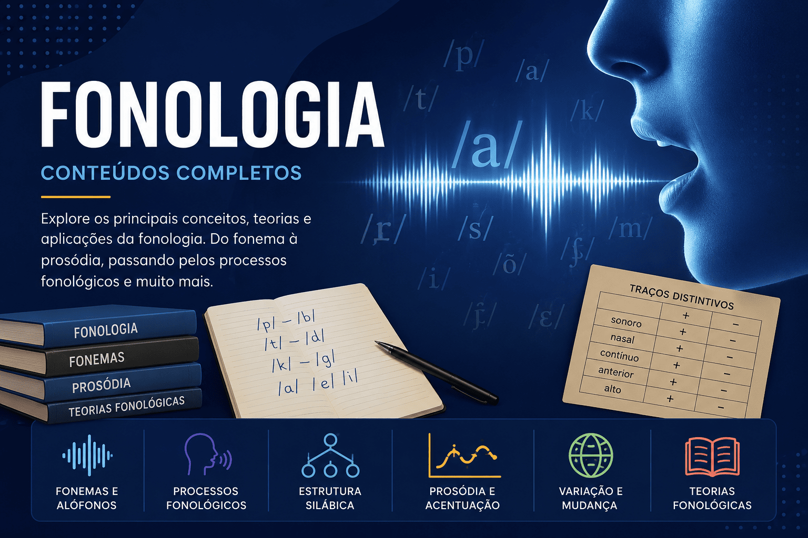

Fonologia: fonemas, sílabas e estrutura sonora da Língua Portuguesa
A Fonologia é o ramo da Linguística que estuda a organização dos
sons da língua e a forma como eles funcionam para produzir diferenças
de significado nas palavras. Seu principal objeto de estudo são os
fonemas, unidades sonoras capazes de distinguir termos como
casa e capa, por exemplo.
Diferentemente da Fonética, que analisa os aspectos físicos da fala,
a Fonologia investiga os padrões sonoros que compõem o sistema linguístico do português,
observando como os sons se organizam em sílabas, palavras e estruturas fonológicas.
Nesta seção do Mestre Kira, você encontrará conteúdos completos sobre
fonemas, letras, encontros vocálicos, encontros consonantais, sílabas, tonicidade,
prosódia, semivogais, hiatos, ditongos, tritongos e diversos fenômenos fonológicos
presentes na Língua Portuguesa.

O que você encontrará nesta seção
Diferença entre fonema e letra;
Classificação dos fonemas;
Vogais, semivogais e consoantes;
Encontros vocálicos e encontros consonantais;
Hiatos, ditongos e tritongos;
Sílaba, tonicidade e prosódia;
Fonologia das semivogais;
Processos fonológicos do português;
Relação entre Fonética e Fonologia.
Os conteúdos são indicados para estudantes do Ensino Fundamental, Ensino Médio,
vestibulandos, candidatos ao ENEM, concursandos, graduandos em Letras, professores
de Língua Portuguesa e todos os interessados em compreender a estrutura sonora da língua.
Os conteúdos desta seção são produzidos por
Leildo Gonçalves, professor de Língua Portuguesa,
pesquisador e criador do Mestre Kira, projeto educacional
voltado ao ensino de linguagem, redação, literatura e tecnologia aplicada à educação.